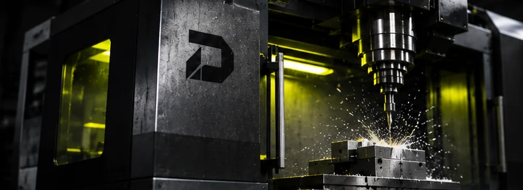

FRÆSNING01 →
VÆRKTØJET
BEVÆGER SIG.

Ved CNC-fræsning fjerner et roterende skærende værktøj materiale fra et fastspændt emne. Metoden er relevant til flader, lommer, huller, konturer, beslag, fiksturer og dele med flere funktionelle sider.
FLADER & KONTURERLOMMER & SPORBORINGER & GEVINDBESLAG & ADAPTERE
Dybder, indvendige hjørner og adgang til værktøjet kan påvirke konstruktionen.